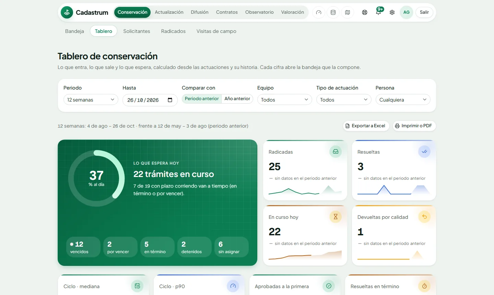

Conservación
Del radicado a la inscripción, con los términos de ley
Las cinco clases de mutación, rectificación, cancelación, recursos y revocatoria sobre un mismo motor. Cada paso exige en la base el registro que lo respalda.
- Días hábiles con festivos, prórrogas, suspensiones y semáforo por trámite
- Resolución en PDF con membrete, firma y código de verificación
- Equipos, reparto por carga y avisos a quien le toca actuar

Tablero de conservación del municipio de demostración.